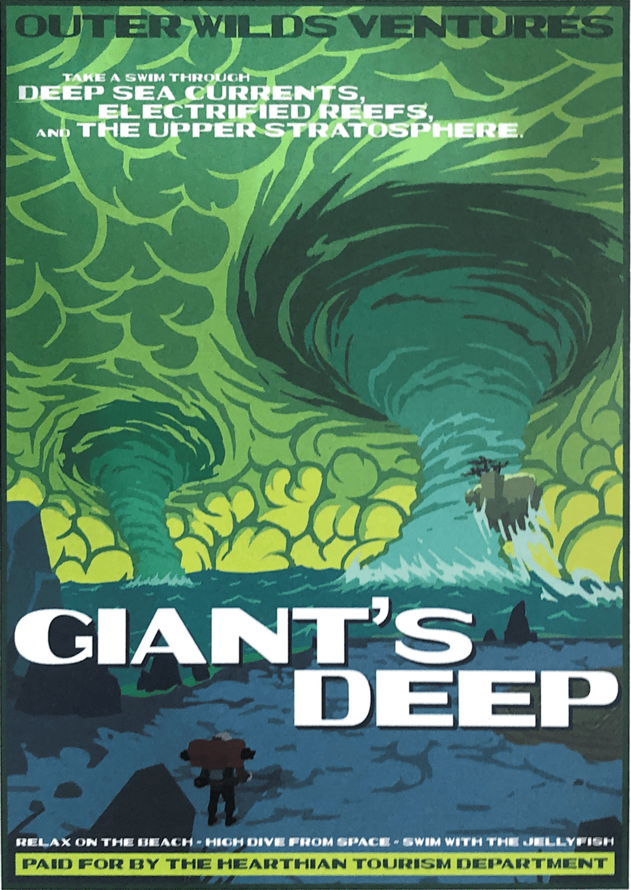
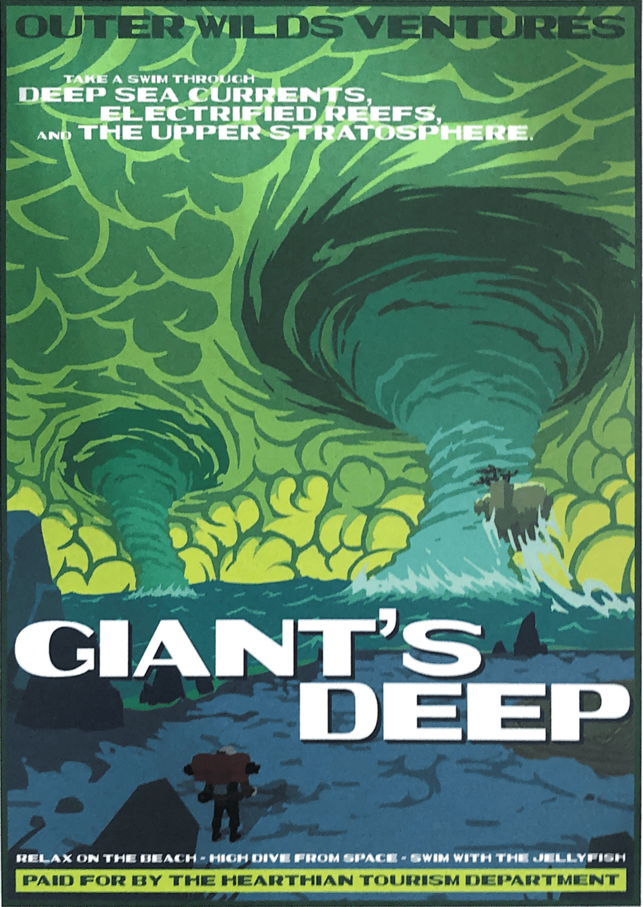

EXPLORA NUESTRO SISTEMA SOLAR
Bienvenido al programa espacial Outer Wilds Ventures, buscamos encontrar respuestas en nuestro extraño —y
siempre cambiante— sistema solar. Un sistema solar que se acerca a su final.
¿Quién construyó las ruinas de nuestra luna? ¿Qué acecha en el corazón de Dark Bramble? ¿Por qué estamos
atrapado en un bucle temporal? Para resolver estos misterios tendrás que aventurarte en los confines más
peligrosos del espacio.
Visita una ciudad subterránea antes de que se la trague la arena. Explora la corteza de un planeta hueco
mientras se desmorona sobre si mismo bajo tus pies. Sobrevive a los tornados de Giant's deep. Cada secreto está
protegido por entornos peligrosos y los desastres naturales están garantizados en un sistema solar esta
fuera de control.
Y cuando se acerque el final, enciende una hoguera, pon tu malvavisco al fuego y observa el precioso fin del universo.
 
